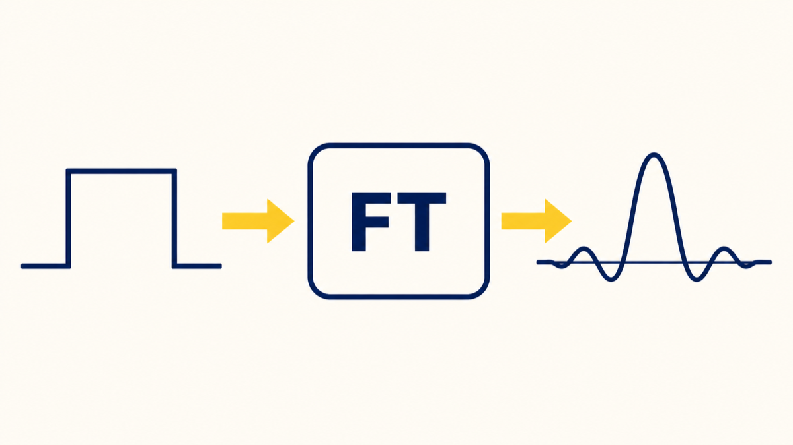
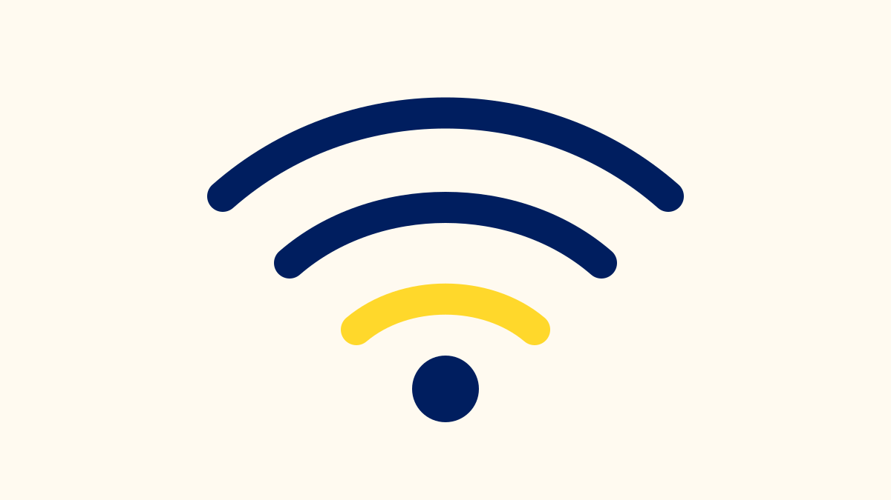
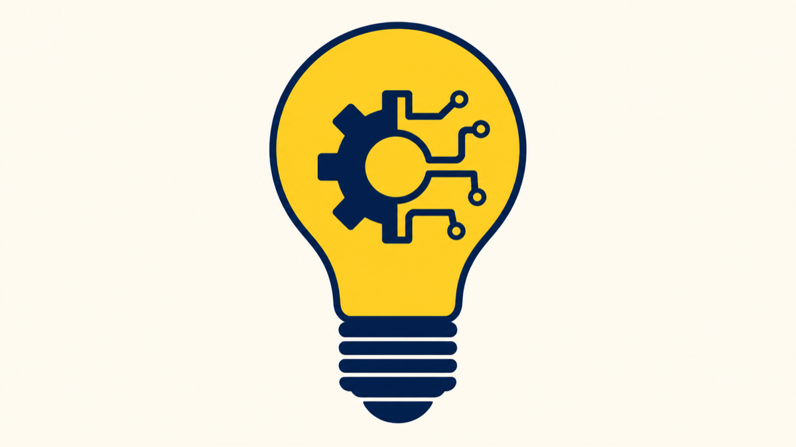
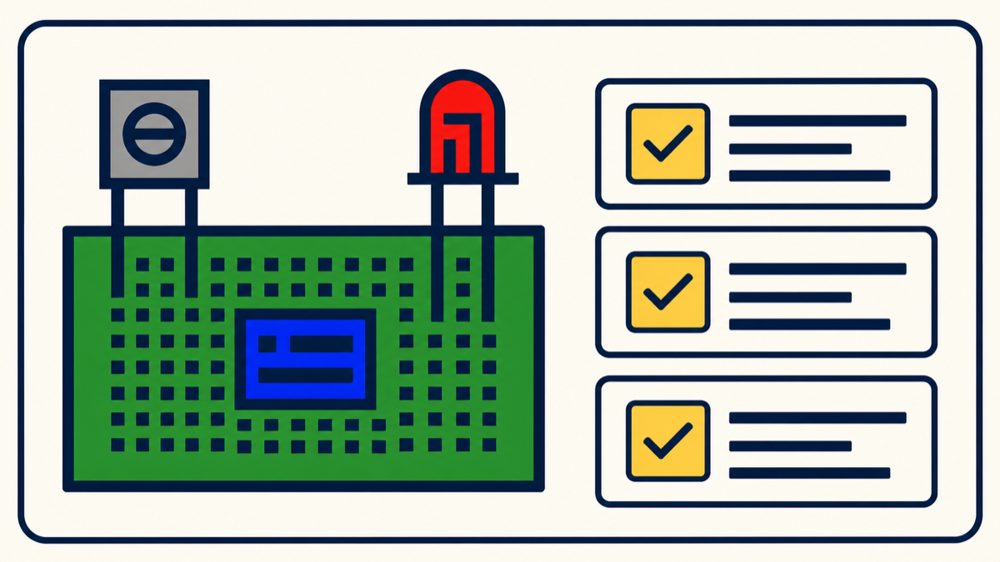
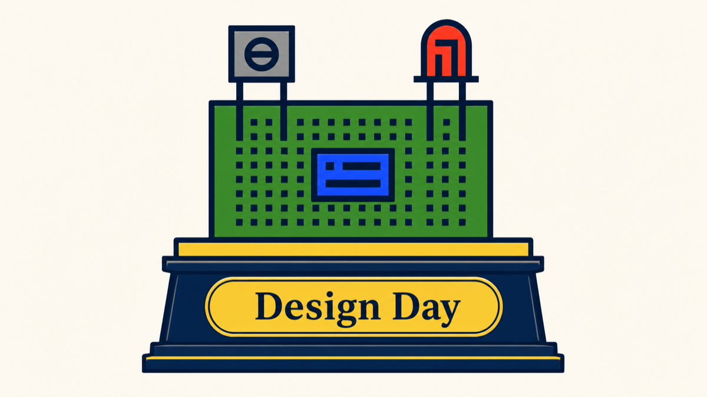

What I Teach

How I Teach
I believe engineering education should connect theory to practice. In my courses, I emphasize hands-on problem solving and real-world applications. I want every student to leave my classroom not just with technical knowledge, but with the confidence to apply it.
Courses

ECE 241: Signals
Introduction to continuous and discrete time signal theory and analysis of linear time-invariant systems. Signal representations, systems and their properties, LTI systems, convolution, linear constant coefficient differential and difference equations, Fourier analysis, and discrete-time processing of continuous-time signals.
Learn more →
ECE 245/445: Wireless Communications
This course teaches the underlying concepts behind traditional cellular radio and wireless data networks as well as design trade-offs among RF bandwidth, transmitter and receiver power, and system performance. Topics include channel modeling, digital modulation, channel coding, network architectures, medium access control, routing, and cellular networks. Students complete a semester-long research project to gain in-depth experience with wireless communications and networking.
Learn more →
ECE 287/487: Strategic Entrepreneurship & Innovation for Engineers
This course introduces engineering students to the fundamental principles of entrepreneurship, focusing on transforming technical ideas into real-world solutions. Students develop practical skills spanning the full commercialization process, from identifying users and communicating value, to organizing resources, collaborating with others, securing support, and protecting their ideas. Through discussions, case studies, and a semester-long project, students gain a broader problem-solving perspective that extends beyond technical design.
Learn more →
ECE 348: Design Seminar
Students explore design project ideas, form teams, and develop proposals for their senior capstone. Through presentations and documentation, they clarify project requirements and create a plan that establishes the foundation for their year-long design experience.
Learn more →
ECE 349: Design Capstone
The capstone senior design course brings together everything students have learned across their ECE curriculum. Students design, build, and present an original engineering project under faculty mentorship. Prior faculty approval or a design project proposal is required.
Learn more →